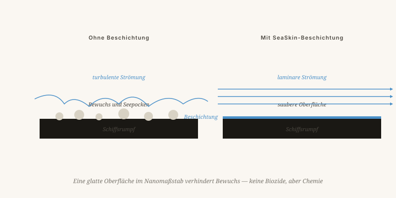

Was bereits existiert
Funktionierende oder in Entwicklung befindliche Technologien, die aus demselben Denkrahmen hervorgehen: Mit der Natur arbeiten, nicht gegen sie.
Von Jacobus van Merksteijn · 8 Min. Lesezeit · 23. Mai 2026

Werkstatt des Erfinders
Beschichtungen, die von der Natur lernen
SeaSkin und SeaSkin++
Antifouling-Beschichtungen für Schiffe auf Basis von Silikonen und Zwitterionen, ohne Biozide. Ein Schiff, das sauberer durchs Wasser gleitet, verbraucht 5 bis 15 Prozent weniger Treibstoff — was bei einem Containerschiff hunderte Tonnen CO₂ pro Jahr ausmacht.
Status: SeaSkin auf dem Markt · SeaSkin++ in Tests mit Schifffahrtspartnern
GuardSkin Folie
Eine biomimetische Folie, inspiriert von Haifischhaut. Aufgebaut aus mikroskopischen Rillen, die die Grenzschicht stabilisieren. Der große Unterschied: Es ist eine Folie, die man aufklebt, keine Farbe, die man aufträgt. Einfacher, dünner, austauschbar.
Status: Prototypen bei europäischen Integratoren (DACH und Südeuropa)

Vom Flugzeugrumpf zum Flachdach
Laminare Luftströmung in großem Maßstab
Eine Familie aus fünf Patenten: Vortex-Pumpe, seitliche Abscherung, Rumpfkaskade, Akustik und Spray-Cleaning. Zusammen halten sie die Luftströmung um einen Flugzeugrumpf über einen viel längeren Abschnitt laminar als bisher möglich.
Kraftstoffersparnis: bis zu 10 % auf Langstreckenflügen · Patente eingereicht · Gespräche mit Flugzeugherstellern laufen
Selektive Wärmeabweisung für Gebäude
Beschichtungen, die Sonnenwärme selektiv reflektieren, um die Kühllast zu senken. Auf Flachdächern in warmen Regionen angewendet, kann dies die Klimaanlagenbelastung um 30 Prozent oder mehr senken. Der Trick: nicht alle Strahlung reflektieren, sondern gezielt das Infrarot.
Status: Laborformulierung fertig · Skalierung in Vorbereitung
Kohlenstoff, Reifen und Fusion
CO₂ zurück in den Boden
Biomasse-Injektion in altes Grubengelände zur langfristigen CO₂-Festlegung. Statt Kompostierung über der Erde wird tief injiziert — in alte Bergwerksstollen oder speziell angelegte Standorte. Dort bleibt der Kohlenstoff jahrhundertelang gebunden.
Pilotprojekt in Spanien (Alquife) und Gespräche im Senegal
Reifen, die atmen
Reifen mit Mikro-Belüftung für geringeren Rollwiderstand und weniger Verschleiß. Der Reifenkern erhält Mikrokanäle, die den Luftdruck variieren — der Kontaktdruck wird gleichmäßiger, der Verschleiß sinkt, der Rollwiderstand ebenfalls. Für Elektroautos doppelt relevant.
Patente eingereicht einschließlich CIP-Erweiterung
Fusion ohne Magnetkäfig
Das Design wird in dem Artikel über Kernfusion besprochen. Frühe Phase, konzeptuell, auf der Suche nach akademischen Partnern für ein erstes Experiment. Einige Millionen, ein gutes Team und ein paar Jahre.
Phase: konzeptuell · Partner gesucht
Die Wirkung in Zahlen
Biomimikry als Ingenieurdisziplin
Wer diese Technologien nebeneinanderstellt, sieht ein Prinzip immer wiederkehren: Mit der Natur arbeiten, nicht gegen sie. Ein Schiff, das sauberer gleitet, ein Flugzeug, das sanfter durch die Luft geht, ein Gebäude, das Sonnenwärme wählt, ein Reifen, der atmet.
Technik stockt nicht an der Technologie
Die Unternehmen, die diese Produkte auf den Markt bringen, sind darauf ausgerichtet, Innovationen schnell in Produkte zu übersetzen — ohne die üblichen Jahrzehnte zwischen Idee und Anwendung. Technik stockt oft nicht an der Technologie, sondern an der Organisation drumherum.
Was bereits vorliegt
Funktionierende und in Entwicklung befindliche Technologien, die alle auf demselben Prinzip beruhen: mit der Natur arbeiten, nicht gegen sie.
SeaSkin und SeaSkin++ sind Antifouling-Beschichtungen für Schiffe auf Basis von Silikonen und Zwitterionen, ohne Biozide. Ein Schiff, das sauberer durch das Wasser gleitet, verbraucht 5 bis 15 Prozent weniger Treibstoff — das entspricht hunderten Tonnen CO₂ weniger pro Jahr und Containerschiff. GuardSkin ist eine biomimetische Folie, inspiriert von Haifischhaut, aufgebaut aus mikroskopischen Rippen, die die Grenzschicht stabilisieren — aufkleben statt streichen, dünner und austauschbar.
AeroSkin ist eine Familie aus fünf Patenten, die die Luftströmung um einen Flugzeugrumpf über einen längeren Abschnitt laminar halten als bisher möglich — bis zu 10 Prozent Treibstoffersparnis auf Langstreckenflügen. SolarSkin reflektiert Sonnenwärme selektiv auf Flachdächern, gezielt das Infrarot, wodurch die Klimaanlagenbelastung um 30 Prozent oder mehr sinkt. TerraClean injiziert Biomasse in altes Grubengestein zur langfristigen CO₂-Bindung. Reifenpatente mit Mikrobelüftung senken Rollwiderstand und Verschleiß. Der konische Vortexreaktor sucht akademische Partner für ein erstes Experiment.
Biomimikry als Ingenieurdisziplin
Wer diese Technologien nebeneinanderlegt, erkennt ein einziges Prinzip: ein Schiff, das sauberer gleitet; ein Flugzeug, das sanfter durch die Luft geht; ein Gebäude, das Sonnenwärme steuert; ein Reifen, der atmet. Technik scheitert oft nicht an der Technologie, sondern an der Organisation um sie herum — der Weg von der Idee zum Produkt dauert noch immer zu lang.